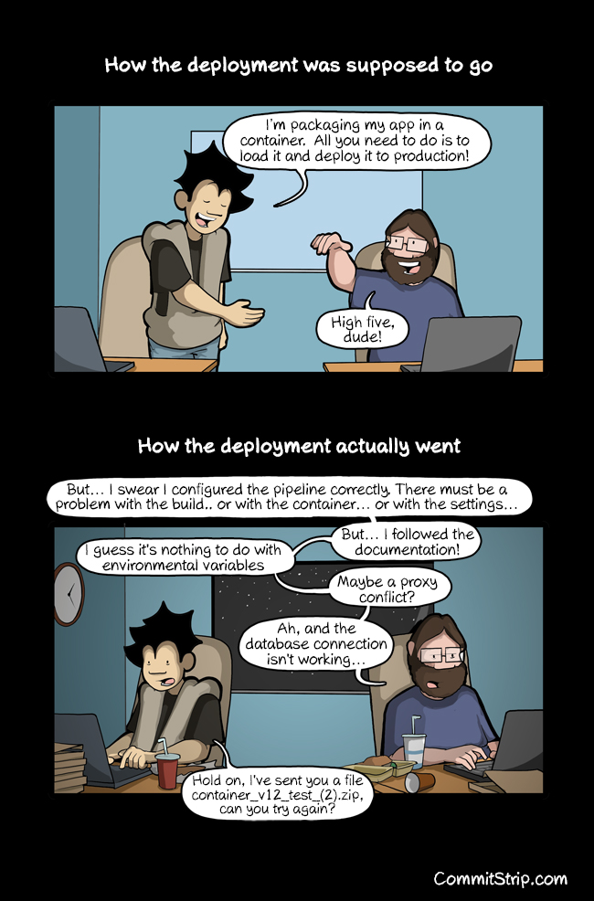
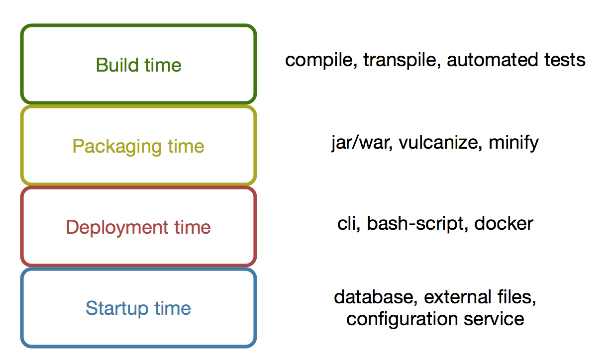

La gestión de configuración de software es una tarea que hace algunos años se consideraba rutinaria, pero debido al incremento de los servicios en línea y su amplia disponibilidad se ha convertido en un área de trabajo importante.
Gestión de configuración es el proceso por el cual todos los artefactos relevantes a un proyecto, sus dependencias y referencias, son obtenidos, almacenados, identificados y modificados
(Humble, 2015)
Para considerar que un ambiente de uno o mas proyectos de desarrollo de software cuentan con una gestión de configuración adecuada, podemos aplicar las siguientes preguntas:
- Puedo reproducir los ambientes de despliegue automáticamente?
- Puedo cambiar entre múltiples ambientes de despliegue?
- Puedo revisar y monitorear cambios en los ambientes de despliegue?
- Puedo revertir los cambios de un despliegue?
Si se contesta de forma afirmativa todas estas preguntas, podemos considerar a la gestión de configuración como correcta, de otro modo estamos en un ambiente de incertidumbre para los ambientes de trabajo.
Se debe aclarar que la gestión de configuración se refiere a todas las posibles configuraciones que están presentes en el desarrollo y despliegue de sistemas, podemos ver estos tipos de configuración esquematizados en el siguiente gráfico:

Build time/Tiempo de construcción
El tiempo de construcción se refiere a las configuraciones necesarias para obtener el código fuente de un sistema y, a través de un proceso de construcción automatizada, llevar estas fuentes hasta un artifacto desplegable. Cabe recalcar que como artefacto desplegable tiene dependencias de las plataformas de ejecución, asi como de los ambientes y su configuración, este es un proceso agnóstico a los ambientes externos.
Packaging time/Tiempo de empaquetamiento
El tiempo de empaquetamiento incluye todas las tareas y configuraciones necesarias para crear y administrar ambientes de despliegue, ya sean de integración, prueba o producción. En esta fase los artefactos de la fase previa se configuran para un ambiente específico, y se permite la entrega y/o administración de sus ambientes de despliegue.
Deployment time/Tiempo de despliegue
En esta fase el despliegue se hace efectivo en instancias públicas, ya sea para pruebas y verificaciones o para su uso en producción. Estas configuraciones incluyen el uso de referencias y dependencias externas, tales como servicios en línea para almacenamiento y publicación de recursos.
Startup time/Tiempo de inicio
Fase final donde las configuraciones de servicios referenciados y dependencias externas se inician, sanitizan y preparan para su interacción con el sistema a desplegar. En esta fase los diferentes elementos debe orquestrarse para su uso compartido e integrado con el sistema a desplegar.
Referencias
- JezHumble. Continuous Delivery, 2015.